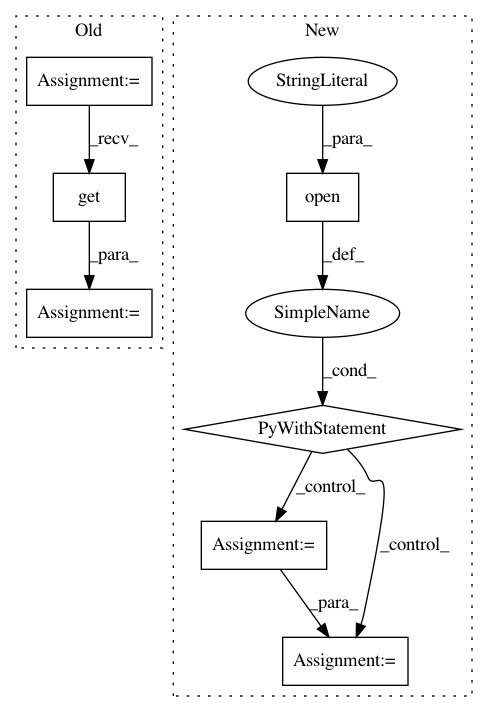

54065add4551a2415af574ad558f7c2d6fbeb9a9,pdftotree/TreeVisualizer.py,,get_pdf_dim,#Any#,86
Before Change
"pdftotext -f {} -l {} -bbox "{}" -".format("1", "1", pdf_file), shell=True
)
soup = BeautifulSoup(html_content, "html.parser")
pages = soup.find_all("page")
page_width, page_height = (
int(float(pages[0].get("width"))),
int(float(pages[0].get("height"))),
)
return page_width, page_height
After Change
def get_pdf_dim(pdf_file) -> Tuple[int, int]:
with open(pdf_file, "rb") as f:
parser = PDFParser(f)
doc = PDFDocument(parser)
// Look at the 1st page only.
page = next(PDFPage.create_pages(doc))
_, _, page_width, page_height = page.mediabox
return page_width, page_height
In pattern: SUPERPATTERN
Frequency: 3
Non-data size: 7
Instances
Project Name: HazyResearch/pdftotree
Commit Name: 54065add4551a2415af574ad558f7c2d6fbeb9a9
Time: 2020-09-24
Author: hiromu.hota@hal.hitachi.com
File Name: pdftotree/TreeVisualizer.py
Class Name:
Method Name: get_pdf_dim
Project Name: scikit-learn-contrib/categorical-encoding
Commit Name: 073e1b2326fd17b6b64db9bd06dc789c44373482
Time: 2018-09-08
Author: jan@motl.us
File Name: examples/benchmarking_large/arff_loader.py
Class Name:
Method Name: load
Project Name: scikit-learn-contrib/categorical-encoding
Commit Name: f1c220bd87fb50668974f60b1309fc4a5814ebe6
Time: 2018-10-08
Author: jan@motl.us
File Name: examples/benchmarking_large/arff_loader.py
Class Name:
Method Name: load